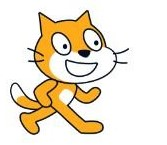
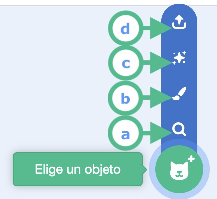
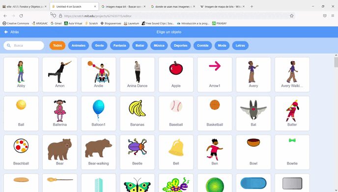
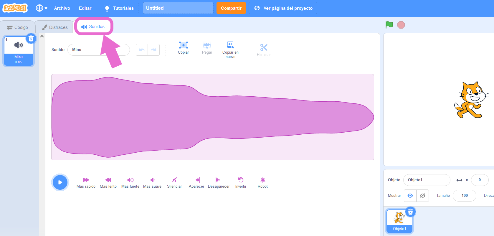
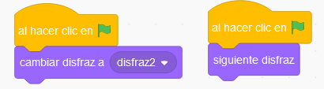
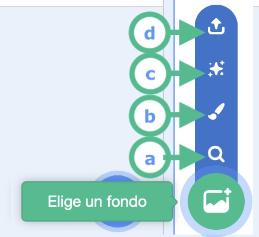
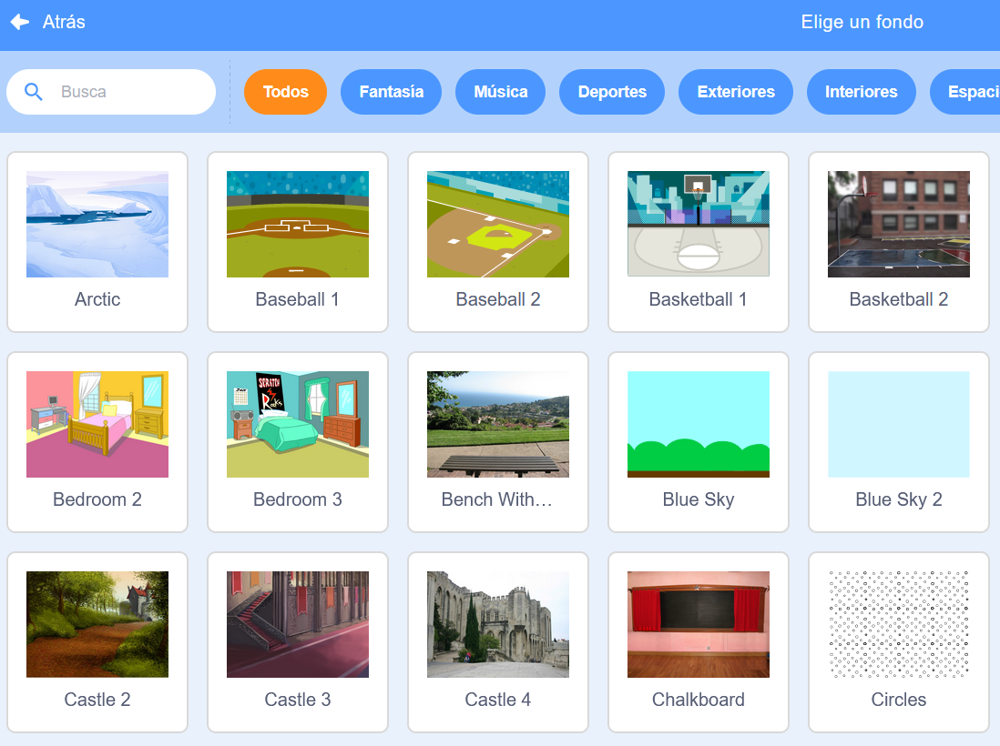
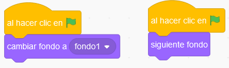

Nos sumergiremos en la elección y diseño de nuestra historia, en las siguientes actividades vamos a aprender a cargar objetos con varios disfraces y fondos en Scratch, a moverlos y ver como se desplazan por el entorno de Scratch los personajes y en la tercera página añadirles sonido, para nuestra historia. Comenzamos con objetos y fondos.
Nos sumergiremos en la elección y diseño de nuestra historia, en las siguientes actividades vamos a aprender a cargar objetos con varios disfraces y fondos en Scratch, a moverlos y ver como se desplazan por el entorno de Scratch los personajes y en la tercera página añadirles sonido, para nuestra historia. Comenzamos con objetos y fondos.
¡Manos a la obra!
Eligiendo objeto

Por defecto, todos los nuevos proyectos de Scratch comienzan con un fondo blanco y un gato. Pero podemos borrarlo y personalizar tanto uno como el otro.
Buscaremos, dos objetos con al menos dos disfraces que representen a nuestros personajes para desarrollar el diálogo de nuestra historia.
Elige un objeto
Desde este menú podemos cargar objetos del propio Scratch o desde el ordenador con las siguientes opciones: .
a. La lupa sirve para elegir los fondos tematizados, que Scratch trae de serie.
b. El pincel sirve para dibujar nuestros propios fondos.
c. La estrellita para seleccionar fondos al azar de la propia herramienta.
d. La opción superior sirve para cargar fondos captados con una cámara o descargados desde internet. Si te descargas "una imagen PNG" debes saber que el fondo no será sólido, sino que la silueta estará recortada.
La mayoría de las veces cargaremos objetos pulsando directamente sobre la cabeza del gato.

Galería de objetos de Scratch
Observa que están organizados por temáticas, puedes verlos todos o puedes pulsar en la temática animales, gente,...
Algunos de ellos tienen varios disfraces y sonido característico asignado al objeto, si te sitúas sobre ellos podrás observar los que tienen movimiento y desde la pestaña sonido escuchar el sonido asignado y si no tiene ninguno grabarle uno.


Dibujando con Scratch
Profundizamos un poco en el diseño de objetos por medio de este video en donde se aprecia cómo se puede crear un objeto con la herramienta pinta. Las imágenes se pueden guardar en formato vectorial o de mapa bit.
Cambiar disfraz
Vas a aprender a elegir un objeto y también vas a conocer los bloques asociados al mismo para el cambio de disfraz del personaje.

Eligiendo fondo
Vas a aprender a seleccionar fondos, para nuestra historia.
Elige un fondo
Desde este menú podemos cargar fondos del propio Scratch o desde el ordenado con las siguientes opciones:a. La lupa sirve para elegir los fondos tematizados, que Scratch trae de serie.
b. El pincel sirve para dibujar nuestros propios fondos.
c. La estrellita para seleccionar fondos al azar de la propia herramienta.
d. La opción superior sirve para cargar fondos captados con una cámara o descargados desde internet.
La mayoría de las veces cargaremos fondos pulsando directamente sobre el circulo montañoso.

Galería de fondos de Scratch
Observa que están organizados por temáticas, puedes verlos todos o puedes pulsar en la temática fantasía, música,...
Cambiar fondo
Vas a aprender a elegir los fondos y también vas a conocer los bloques asociados a los mismos.

Kardia dice ¿Quieres conocer más sobre las imágenes?
¿Imágenes vectoriales o mapa de bits?
Las imágenes vectoriales tienen mayor calidad. ¿Quieres comprobar si tu archivo es vectorial o mapa de bits? Acerca la imagen. Si la imagen permanece clara y nítida, entonces es una imagen vectorial.
Las imágenes de mapa bit se utilizan para representar imágenes solidas y con colores intensos. Al hacer zoom en una imagen si ves los píxeles en forma de cuadrados es del tipo mapa de bits.
Composición escénica
 Ahora con todo lo que has visto y explorado te invito a que hagas una breve escena, en Scratch, eligiendo la opción con la que te sientas mejor.
Ahora con todo lo que has visto y explorado te invito a que hagas una breve escena, en Scratch, eligiendo la opción con la que te sientas mejor.
Opción diséñalo todo
Crea tus propios objetos con al menos dos posiciones y un fondo con la herramienta pintar.
Lumen dice ¿No sabes como hacerlo?
Sigue los pasos de este video, utilizando la herramienta pintar, que es una de las más creativas que tiene Scratch para crear desde cero un nuevo fondo. Igualmente podríamos retocar o crear desde cero un objeto.